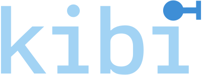

Open source · Runs in your repository
Say what the software
should do.Your agent won’t forget why.
A requirements framework for AI coding agents. It keeps the reasoning behind your code and proves what is tested.